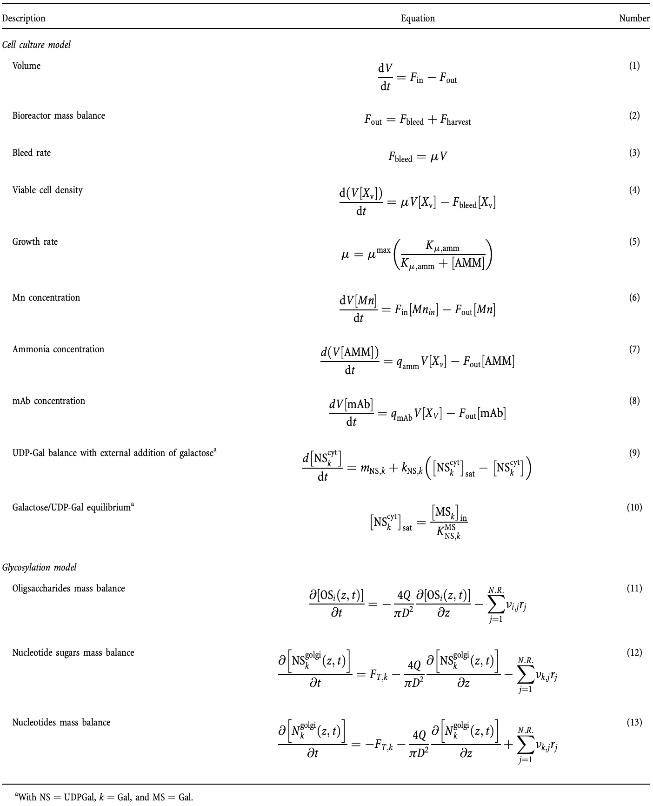

Mechanistic Modeling
Table of Contents
Background
Overview
Mechanism models, also known as first principle models, utilize differential and partial differential equations and biochemical knowledge to model the interactions within an operation. In this section, we will study the model as it pertains to cell culture and chromatography: how it is formulated, what it represents, how it is applied, as well as the model’s advantages and limitations.
As introduced in previous modules, the parameters (inputs) that have the most significant effect on the output of the process are called critical process parameters (CPPs), and these CPPs ultimately determine the most important measures of the output called critical quality attributes (CQAs). Mechanism models aim to model the interaction of these CPPs and their effect on CQAs within an operation by using differential equations.
The Use of Mechanism Models
Mechanism models provide an abstract description of underlying mechanisms in the biopharmaceutical process. More specifically, they are used to describe physical interactions like mass transfer, heat transfer, heat flow, and their impact on the chemical reaction taking place using differential equations.
Mechanism models are developed by combining known physical laws with training data and experiential knowledge of the interactions in a given process. These models commonly have many parameters that were adjusted or created to fit existing data. The result is a model that has a basic understanding of the interaction at hand, but helps to describe CPP impact on CQAs.
For example, in the cell culture process, first principles models are used to predict how adjusting something like media flow rate (CPP) has an impact on substrate concentration (CQA) in the yield.
Advantages
The biggest advantage of first principles models is that a model can be tailored to a specific process layout when defining parameters. The use of test data in the construction of a mechanical model will most accurately model your particular machinery. In addition, first principles models can be used to monitor, control, and optimize the process as it’s running.
Disadvantages
Mechanical models struggle with accuracy. When creating a mechanical model, attempting to add accuracy can quickly make a model extremely complicated. Adding accuracy adds more parameters to the model, making it harder to interact with the model and get easily measurable results. The construction of a first principles model is also labor intensive and time consuming. Collecting test data and gaining the necessary knowledge to create a mechanical model can use many resources, especially for a model that only returns ballpark results.
Bioreactor Simulation
Traditionally, biopharmaceutical researchers/engineers relied on an experimental approach to extract data and information from cell cultures and evaluate how the system inputs such as media formulation, temperature, and pH affect the outputs, i.e., cell growth, cell viability, product titer, and quality, in an intuitive or statistical manner. However, this conventional approach is highly undesirable in industrial settings owing to the cost and time of the required experimentation. In this regard, mathematically representing the cell culture systems and subsequent analysis for better understanding via appropriate in silico techniques can be considered as a promising approach. Importantly, mathematical models help organize and integrate the existing data in a systematic way. The constructed models can therefore be used to predict cellular responses to various environmental/genetic perturbations, and to identify targets for host cell line engineering to improve culture performance.

Cell Culture Fermentation Modeling Types
Bioreactors are modeled similarly to stirred tank chemical reactors
A mass balance equation can be used as a first principles model to understand the interaction between the CPP’s and CQA’s
Biological reaction rate models are structured or unstructured, non-segregated or segregated
Unstructured: Reaction rate depends only on concentrations external to the cell
Structured: Reaction rate is also dependent on concentrations in intercellular components
Non-segregated: All cells are treated as identical
Segregated: Multiple populations of cells with different characteristics
General Approach
Typicaally a kinetic model consists of differential algebraic equations (DAEs) that can be derived from the time-dependent mass balances of participating components with appropriate mechanistic or empirical kinetic equations, e.g., Monod kinetics ,mass action kinetics, and Michaelis–Menten kinetics. Some models only use ordinary differential equations (ODEs) through simplifying assumptions.
Table: Mass balances for viable cells and nutrients/by-products/meta-bolites/product around the bioreactor as well as unstructured Monod based equations is provided in the following table (Table adopted from [1]).
Notations:
\(X_V\), viable cell concentration;
\(V\) culture volume;
\(F_{IN}\),flow rate in the culture (for fed-batch or perfusion modes);
\(X_{V_{IN}}\), viable cell concentration in the inflow;
\(F_{OUT}\),flow rateout of the bioreactor;
\(\mu\), specific growth rate;
\(k_d\), specific death rate;
\(k_{lys}\), lysis rate;
\(X_D\), non-viable (“dead”) cell concentration;
\(C_i\), molar concentration of a nutrient/product/by-product/metabolite (based on context) \(i\);
\(C_{i_{IN}}\), molar concentration of \(i\) the inflow;
\(q_i\), specific consumption/production rate (negative or positive, respectively);
\(k_i\), chemical/non-enzymatic degradation rate of \(i\), if applicable, assuming first-order degradation (negative if \(i\) is degrading, positive if another product is degrading to \(i\));
\(\mu_{max}\), maximum specific growth rate;
\(k_{C_i}\), half-velocity constant;
\(N\), total number of considered limiting substrates for Equations 4 and 6, and total number of considered toxic products in Equation 5;
\(k_{D_{max}}\), maximum specific death rate;
\(n_i\), Hill coefficient;
\(K_{D_{C_i}}\), death-associated half-velocity constant;
\(K_{I_{C_i}}\), inhibitor-associated half-velocity constant;
\(Y_{X/C_i}\), yield of cells to \(C_i\);
\(m_i\), maintenance coefficient.
Mass balances for various cell types (e.g.,cells in distinct apoptotic phases or in different stages of cell cycle) can be distinguished by including transition rates between the different cell populations. The important variables to be de fined in these mass balances are the specific rates, i.e., cell growth (\(m\)), cell death (\(k_D\)), and metabolite production/consumption (\(q_i\)),that dynamically change during the culture process.
Perfusion Bioreactor
Lu et al. [1] modeled the growth and energy metabolism of Pichia pastoris producing a fusion protein under glycerol and methanol feed using an unstructured, nonsegregated model.
Biological kinetic models can be classified as unstructured nonsegregated model whose reaction rate depends only on concentrations external to the cell and all cells are taken to be identical. The differential equations are listed as below
Bioreactor Kinetic Model
Harvest/Hold Tank Model
\(ùëã\): biomass
\(ùêπ_ùëñùëõ\): inlet flow rate (L/h)
\(ùêπ_ùëúùë¢ùë°\): outlet flow rate (L/h)
\(ùúá_ùëî\),\(ùúá_ùëö\): Specific growth rate
\(ùëÜ_{ùëñùëõ,ùëî}\): inlet glycerol concentration (g/L)
\(ùëÜ_{ùëñùëõ,ùëö}\): inlet methanol concentration (g/L)
\(ùëÜ_ùëî\): glycerol concentration (g/L)
\(ùëÜ_ùëö\): methanol concentration (g/L)
\(ùëû_{ùëÜ_ùëî}\),\(ùëû_{ùëÜ_ùëö}\): Specific rate of substrate consumption (g/g-h)
\(ùëû_{ùëÉ_ùëñ}\): Specific product production rate (g/g-h)
\(ùëÉ_ùëñ\): protein \(ùëñ\)
\(ùëâ\): bioreactor volume (L)
Reference
Kyriakopoulos, S., Ang, K.S., Lakshmanan, M., Huang, Z., Yoon, S., Gunawan, R. and Lee, D.Y., 2018. Kinetic modeling of mammalian cell culture bioprocessing: the quest to advance biomanufacturing. Biotechnology Journal, 13 (3), p.1700229.
Lu, A.E., Paulson, J.A., Mozdzierz, N.J., Stockdale, A., Versypt, A.N.F., Love, K.R., Love, J.C. and Braatz, R.D., 2015, September. Control systems technology in the advanced manufacturing of biologic drugs. In 2015 IEEE Conference on Control Applications (CCA) (pp. 1505-1515). IEEE.
Chromatography Simulation
The downstream process of biopharma manufacturing typically has multiple purification unit operations, each with a slightly different mechanism and purpose, and end purity goal. Chromatography is arguably the most important unit operation in purification, and here we will introduce and explain a general mechanism model for the process of chromatography.

Chromatography Modeling
In chromatography, mechanistic modeling can be used to simulate elution profiles under different conditions such as column dimensions, load ratio, flow rate and conductivity. Simulations can be performed for both major and minor sample components. The output can then be used to optimize the separation. The following image shows the elution profiles of capture column in three steps.

Chromatography simulation model is built on mechanistic model combining SMA adsorption kinetic models and mass transport models (such as GRM, Thomas model, Transport model).
General rate model (GRM) is the most comprehensive rate model to date. The solution of GRM requires solving a set of PDEs including mass balance, mass transfer, and adsorption kinetic equations in the column and in the stationary phase. The general rate model of chromatography uses two mass balance equations, one in the mobile phase outside the particle and the other in the stagnant mobile phase inside a particle, and two kinetic equations, one relating the two mobile phase concentrations (mass transfer kinetics) and the other relating the stagnant mobile phase and the stationary phase concentrations (kinetics of adsorption-desorption).
A Mechanistic Model
We provide a state-of-the-art chromatography modeling example that used the steric mass action (SMA) isotherm with a nonideal transport model.
Mobile phase (Mass Transfer Kinetics)
Nonideal transport model for the concentration of \(i\)th species. The first term on the right-hand side describes the convective transport through the column, the second term the dispersive transport and the third term the interaction between mobile and absorbed phase
The mass balance of salt whose concentration is denoted by \(C_{salt}\)
Absored/Stationary Phase (kinetics of adsorption-desorption)
The time dependent change of the concentration of species \(i\) on the adsorbent surface
Notations: \(C_i\) is the concentration of species \(i\) in the liquid phase, \(t\) is the time, \(\varepsilon_{tot}\) is the total porosity, \(z\in[0, 1]\) is the dimensionless length, \(Pe\) is the Peclet number, \(q_i\) is the concentration of species \(i\) in the adsorbed phase, and \(\varepsilon_{pore}\) is the particle porosity. \(k_{ads,i}\) is the rate constant of adsorption for component \(i\), \(Q\) is the number of ligands available for adsorption and desorption, \(v_i\) is the characteristic charge of component \(i\), \(k_{des,i}\) is the rate constant of desorption for component \(i\).
Reference: Sejergaard, L., Karkov, H. S., Krarup, J. K., Hagel, A. B. B., & Cramer, S. M. (2014). Model‐based process development for the purification of a modified human growth hormone using multimodal chromatography. Biotechnology Progress,30(5), 1057-1064.
Plantwise Simulation
In this lecture, we focus on a perfusion biorecator of Pichia pastoris cells, which includes
State-of-the-art models in chromatography,
Perfusion bioreactors
Uuse of models for integrated process simulation and prediction.
The simulation model and implementation is adapted from [1].
Diagram
In the bioprocessing industry, most work has revolved around modeling unit operations [11]. Models for bioreactors and chromatography are mature and will be briefly reviewed in the subsequent subsections. However, the unit operations do not operate in isolation, and changing a unit’s operating conditions will impact downstream processing. This motivates integrated plant models.
Potential Usage
Consider integrated perfusion bioreactor and chromatograph purification.
Conduct long-term predictive analysis, e.g., how the feeding strategy at different times of bioreactor impact on the trajectory and variation of integrated biomanufacturing processes
Find the optimal and robust control strategies for this integrated process
Reference
Lu, A.E., Paulson, J.A., Mozdzierz, N.J., Stockdale, A., Versypt, A.N.F., Love, K.R., Love, J.C. and Braatz, R.D., 2015, September. Control systems technology in the advanced manufacturing of biologic drugs. In 2015 IEEE Conference on Control Applications (CCA) (pp. 1505-1515). IEEE.
N-linked Glysycolation Simulation
High Level Model Overview
The glycosylation model is based on the cisternal maturation assumption with recycling of Golgi resident proteins first proposed by Jimenez del Val et al. (2011). The mass balances for the species involved were calculated considering the Golgi apparatus as a single plug flow reactor operating at steady state according to equations (11)-(13) and the reaction scheme reported in the figure below. The effect of the operating conditions on N-glycosylation was simulated by linking the kinetics of enzymatic reactions to the availability of sugar precursors, and the concentrations of metal ions and ammonia.

Model Description
Mass balance equations for the unstructured cell culture model and the mechanistic glycosylation model adapted from Karst et. al. (2017). The modeling framework can be divided in two sections. The first part comprises a simple unstructured cell culture model for the estimation of cell specific parameters (e.g., growth rate, ammonia and antibody specific productivities) and process related values (e.g., bleed rate). The mass balances of the perfusion bioreactor are based on the assumption of a CSTR reactor (e.g., perfect mixing).

Unstructured cell culture model
An unstructured cell culture model [1-10] was used to describeviable cell density, specific productivity, ammonia produc-tion,and intracellular nucleotide sugars as shown in Table 1.The initial conditions were taken from measurements at the beginning of the culture.
Structured model of N-linked glycosylation
A dynamic mechanistic model [11-13] of mAb Fc N-linked glyco-sylation was adapted from Del Val et al., describing cisternal maturation of the Golgi apparatus as a single plug flowreactor (PFR) including recycling of Golgi-resident proteins and transport equation for nucleotide sugars.
Kinetic Reaction Network: column (reactant), row (product), cell (enzyme)
In fact, the reaction network can be represented in a matrix form. The following figure of reaction scheme describes the
N-glycosylation for the mAb in the mechanistic model. This network defines the reactant (column), product (row) and enzyme (cell) involved
in each reaction.

Reference:
Karst, D. J., Scibona, E., Serra, E., Bielser, J. M., Souquet, J., Stettler, M., … & Villiger, T. K. (2017). Modulation and modeling of monoclonal antibody N‐linked glycosylation in mammalian cell perfusion reactors. Biotechnology and bioengineering, 114(9), 1978-1990.
Jimenez del Val, I., Nagy, J. M., & Kontoravdi, C. (2011). A dynamic mathematical model for monoclonal antibody N‐linked glycosylation and nucleotide sugar donor transport within a maturing Golgi apparatus. Biotechnology progress, 27(6), 1730-1743.
Case Study
Case Study 1: Troubleshooting a Change in the Distribution of Galactosylated Glycoforms
Introduction
This case study is a troubleshooting scenario in which the distribution of galactosylated glycoforms for a Chinese Hamster Ovary (CHO)-derived recombinant protein changes considerably after switching to a new chemically defined (CD) media. The case study is adapted from a real industrial problem reported by Eli Lilly and Company (McCracken et al., 2014), and the task is to track down which changes in the CD media, nutrients and metabolite resulted in the change of the distribution of galactosylated glycoforms. With this information, the composition of the new CD media can be modified to shift back to being near the original glycosylation profile. This case study requires constructing the relationship between a change in the raw materials (media)/metabolites and a critical quality attribute (the distribution of galactosylated glycoforms (G0F, G1F, and G2F)). This case study considers a fed-batch process and may consider two different length scales (flasks and bioreactors). The objective of this case study is to improve the trainees’ understanding of process variation in critical quality attributes (CQAs) and how to identify the critical process parameters (CPPs), infer the causal relationships between CPPs and CQAs, and use process analytical technology (PAT) tools to find the root cause for the CQA variation. The trainees are expected to quantitatively analyze the process variation and its connection to critical process parameters, process variables, and other potential factors. In addition, they can conduct predictive analysis to guide decisions towards achieving specifications on the CQAs.
Background
Cell culture process conditions, including media components and bioreactor operation conditions, have a profound impact on cellular metabolic state and recombinant protein quality attributes. Glycosylation is a complex biological process that can impact activity, immunogenicity, and efficacy of therapies. Considerable changes in the distribution of galactosylated glycoforms (G0F, G1F, and G2F) are observed for a CHO-derived monoclonal antibody when switching to new chemically defined (CD) media, namely, significantly lower G0F and higher G1F and G2F percentages are observed. These changes are of interest as a change in glycosylation can impact the safety and effectiveness of therapeutic proteins.
Objective
Understand the root cause of the change and design a strategy for correcting the distribution of galactosylated glycoforms.
Example Experimental Design at the Flask Scale to Generate Data for Troubleshooting
Flasks are seeded with approximately the same cell densities. A fed-batch operation has nutrient feeds entering on predetermined schedule. Culture cell density and viability and metabolites are monitored. Medium, feeds, and stock solutions are known and all cultures are harvested at the same time. Some experimental conditions are repeated to assess reproducibility, whereas others are not, to save time. The experiments are designed with the goal of determining which specific components in the media (such as Sialic Acid, Galactose, etc.), nutrients (glucose) and metabolite (such as ammonia) resulted in the change in the glycosylation profile.
Potential Root Causes
Feed rate
Media and metabolite
Mn concentration
Ammonia concentration
Galactose feed
Tasks
Task 1: Use the simulator to generate a data set of glycan profiles with new CD media versus old media.
Task 2: Illustrate the distribution difference in the digital twin interface (see figures adapted from McCracken et al., 2014)
Task 3: Ask students to troubleshoot the problem.
Case Study 3: Integrated Process Control of the Bioreactor and Chromatography
Introduction
In this case, students will study two key unit operations, namely bioreactor and chromatography, in an typical biomanufacturing process. The unit operations will be highly integrated, with automatic material handling and transfer between unit operations. Students are expected to learn various control methods and trouble-shooting analysis in the integrated fed-batch bioreactor and chromatography process and then analyze its impact on the process yield and product purity. The case study is derived from real industrial problems for real-time monitoring of multiple process parameters in bioreactors[2,3,5], and in control of glucose and lactate concentrations[1,4] and chromatographic process[9,10]
Background
One of the objectives in the production of therapeutic proteins is to maximize productivity while respecting required product quality. A key limitation in the cell culture processes is the accumulation of lactate. Since excess glucose can lead to increased lactate production through increased glycolytic activity, online measurements of glucose and lactate concentrations enable both monitoring operational problems and tighter control of glucose and lactate concentrations. In addition, the perturbation in the upstream (caused by sensor noise, raw material, or operation errors) will inevitably impact on the product quality in the downstream. Thus, it is of great interest to quantify the impact and analyze probable root causes.
In the downstream, chromatography is a critical separation step that is widely used in research and industry as an analytical or preparative tool. Separation can be achieved by differences in affinity, hydrophobicity, surface charge and molecular weight, and other factors. It involves a column which is charged with pulses of the feed solution. While travelling through the column, the more adsorptive species is retained longer by the adsorbent, thus leaving the column after the less adsorptive specie.
Objective
Apply process control for mammalian cell culture bioreactors and downstream chromatography to improve productivity and product quality while ensuring that specifications on CQAs are satisfied.
Example Experimental Design
The bioreactors are operated in fed-batch mode using proprietary basal and feed medium formulations. Commercially available chemically defined basal medium (CD) is used in both cell expansion and production stages. A fed-batch operation has nutrient feeds entering on predetermined schedule. Medium, feeds, and stock solutions are known, and all cultures are harvested at the same time. The bioreactors were operated at 37°C. The pH and DO are maintained at 6.94±0.04 and 50% of air saturation, respectively. The bioreactor pH is controlled by addition of CO2 gas to decrease pH and addition of 3 N NaOH base to increase pH as needed. Inoculum conditions and feeding rate of substrate are controlled in order to provide conditions in the bioreactor to achieve a wider range in nutrients, metabolites, and cell densities than would be observed under normal operating conditions, which in turn allows for generation of more robust calibration models. Experiments are run to generate the at-line measurements of the viable cell, glucose, glutamine, lactate, ammonium and monoclonal antibody concentration. The chromatography will be simulated in the digital twin using GRM and SMA. The results of the SMA are in the form of chromatograms. Yields and purities of the desired product can be computed at various points along the simulated model chromatogram.
Tasks
Sensitivity/predictive analysis of fermentation to the perturbation of CPPs. The perturbation of critical process parameters will affect the productivity and product quality. The importance of maintaining a proper level of CPPs (e.g. VCD/nitrogen concentration) has been well recognized. The sensitivity of the fermentation to these perturbations has considerable practical importance and is therefore the subject of the case study.
Chromatography Optimization. The inlet protein and salt concentration, entering the chromatography columns, are set from the bioreactor upstream to the separation unit. In a chromatography setup, sensors can only be placed at the entrance and exit of the column–not within its interior. This limits the applicability of classical feedback control. For example, if a load solution has an unusually high protein concentration, this will only be detected by premature breakthrough during the loading phase. Even if loading was terminated upon the detection of breakthrough, additional protein would be lost during the wash phase, compromising recovery. To mitigate these effects, open loop optimal control can be used as a control strategy. In this case, measures of the load solution concentration, obtained by UV280 absorbance or Raman spectroscopy, can be used as parameters for the chromatography model. Optimization can then be used to select the operating conditions to be used to achieve optimal process performance.
In the chronography, the column was assumed to operate in a 4-stage bind and elute mode. A total of 6 operating variables were relevant to the problem, listed in table below,
Table 1: Operating Variable of Chronography
# |
Stage |
Time |
Protein Conc. |
Salt Conc. |
|---|---|---|---|---|
1 |
Load |
t_l |
\(c_{p,i}^\#\) |
\(c_{p,l}^\#\) |
2 |
Wash |
t_w |
0 |
\(c_{s,w}\) |
3 |
Purge |
t_p |
0 |
\(c_{s,e}\) |
4 |
Elute |
t_e |
0 |
\(c_{s,e}\) |
For a chromatographic process with given design parameters, the determination of the optimal operating regime can be posed as a combination of four competing objectives: purity, recovery, concentration, and productivity; see details in [11].
Reference:
Thomas E. Matthews, Brandon N. Berry, John Smelko, Justin Moretto, Brandon Moore, Kelly Wiltberger (Biogen). Closed loop control of lactate concentration in Mammalian cell culture by Raman spectroscopy leads to improve cell density, viability, and biopharmaceutical protein production. Biotechnology and Bioengineering, Vol. 113, No. 11, Pages 2416-2424, November 2016. https://pubmed.ncbi.nlm.nih.gov/27215441/
Hamidreza Mehdizadeh, David Lauri, Krizia M. Karry, and Mojgan Moshgbar, Renee Procopio-Melino, and Denis Drapeau (Pfizer). Generic Raman-based calibration models enabling real-time monitoring of cell culture bioreactors. Biotechnology Progress, Vol. 31, No. 4, Pages 1004-1013, July-August 2015. https://pubmed.ncbi.nlm.nih.gov/25825868/
Jessica Whelan, Stephen Craven, and Brian Glennon. In situ Raman spectroscopy for simultaneous monitoring of multiple process parameters in Mammalian cell culture bioreactors. Biotechnology Progress, Vol. 28, No. 5, Pages 1355-1362, September-October 2012. https://pubmed.ncbi.nlm.nih.gov/22740438/
Stephen Craven, Jessica Whelan, Brian Glennon (Applied Process Company). Glucose concentration control of a fed-batch mammalian cell bioprocess using a nonlinear model predictive controller. Journal of Process Control, Vol. 24, 344-357, 2014.
Stephen Goldrick, Alexandra Umprecht, Alison Tang, Roman Zakrzewski, Matthew Cheeks, Richard Turner, Aled Charles, Karolina Les, Martyn Hulley, Chris Spencer, and Suzanne S. Farid (nearly all employees of AstraZeneca). High-throughput Raman spectroscopy combined with innovate data analysis workflow to enhance biopharmaceutical process development. Processes, 8, 1179, 2020.
Hua Zheng, Wei Xie, Ilya O. Ryzhov, Dongming Xie (2021). Policy Optimization in Bayesian Network Hybrid Models of Biomanufacturing Processes. https://arxiv.org/pdf/2105.06543.pdf
Kornecki, M. and J. Strube. “Process Analytical Technology for Advanced Process Control in Biologics Manufacturing with the Aid of Macroscopic Kinetic Modeling.” Bioengineering (Basel), Vol. 5, No. 1, 2018, doi:10.3390/bioengineering5010025.
Shekhawat, L. K., & Rathore, A. S. (2019). An overview of mechanistic modeling of liquid chromatography. Preparative Biochemistry and Biotechnology, 49(6), 623-638.
Iyer, H., Tapper, S., Lester, P., Wolk, B., & van Reis, R. (1999). Use of the steric mass action model in ion-exchange chromatographic process development. Journal of Chromatography A, 832(1-2), 1-9.
Osberghaus, A., Hepbildikler, S., Nath, S., Haindl, M., Von Lieres, E., & Hubbuch, J. (2012). Optimizing a chromatographic three component separation: A comparison of mechanistic and empiric modeling approaches. Journal of chromatography A, 1237, 86-95.
Lu, A. E., Paulson, J. A., Mozdzierz, N. J., Stockdale, A., Versypt, A. N. F., Love, K. R., … & Braatz, R. D. (2015, September). Control systems technology in the advanced manufacturing of biologic drugs. In 2015 IEEE Conference on Control Applications (CCA) (pp. 1505-1515). IEEE.